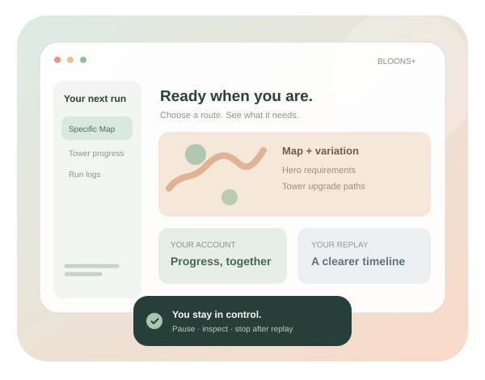
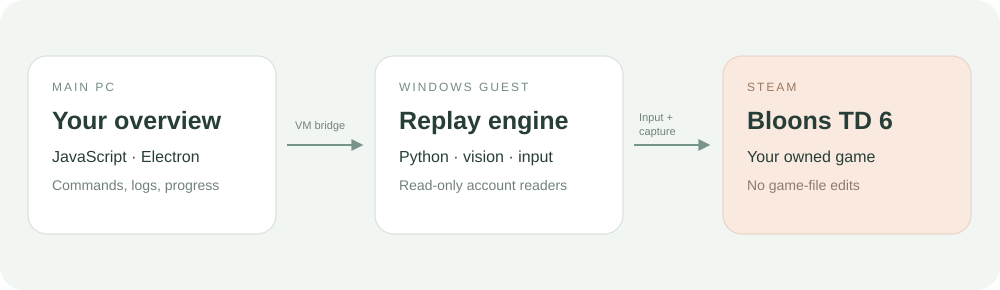

Missing msvcp140 DLLs
Install or repair the Microsoft Visual C++ x64 runtime where replay runs. A host install does not install it in the VM.
A calmer place for routes, progress and your Windows VM. Install Bloons+, connect BTD6 and learn each control.

From installation to your first run.
Main PC, guest, game. Connected.
Maps, automation, logs and settings.
Choose your path. Each guide keeps the next step clear.
Windows, internet access and an owned Steam copy of BTD6 are required. VM setup needs supported virtualization; system changes may request administrator access.
Check installer releases ↗No release asset yet? Use “Run from source”. The generated installer is not stored in Git.
Run the setup executable and let it complete its dependency steps. Keep the installer log if a step fails.
Open the app’s VM setup flow. Enable the required Windows features if prompted, then finish guest provisioning.
Inside the VM, sign in to Steam, complete Steam Guard and install BTD6 from your library.
Reach the BTD6 main menu. Confirm live status in Bloons+ before starting one specific map.
Install Git, Node.js/npm and Python 3.12. Run these commands in PowerShell for a fresh checkout.
Preserve an existing userconfig.json. The example copy is for first setup only. Python dependencies can take time to download.
Full build instructions ↗git clone https://github.com/Klaasawastaken/BloonsPlus.git
cd BloonsPlus
npm ci
py -3.12 -m venv .venv
.\.venv\Scripts\python.exe -m pip install -r requirements-installer.txt
Copy-Item autobtd6/userconfig.example.json autobtd6/userconfig.json
npm run appA specific run lets you check the connection, route requirements and live logs before a longer sweep.
Use pause to inspect a run. “Stop after this replay” is useful when you want the current game to finish first.
Open Automation and choose the map, difficulty and variation you want to run.
Inspect the route’s hero and required tower paths. Account reads may be incomplete; do not treat unknown progress as confirmed unlocks.
Check the correct map and mode opened, the hero was selected and the initial towers actually placed.
A route finishing its action list is not a clear. Confirm victory and the saved medal before counting it as complete.
Check installation, guest connection, game state and replay logs separately. That makes a useful bug report much easier.
Report a reproducible issue ↗Install or repair the Microsoft Visual C++ x64 runtime where replay runs. A host install does not install it in the VM.
Check the guest is running and setup has installed the matching SSH identity. Do not publish private keys or passwords in logs.
Check the host/guest target and guest app deployment. Pulling new source on the host does not update an installed guest automatically.
Include map, difficulty, variation, round, app version and surrounding log lines. Placement and upgrade evidence helps distinguish route failure from input failure.
Active development: route availability is not a win guarantee. Full tower auto-unlocking and boss execution are unfinished.
The VM keeps game input separate from your main desktop. The bridge brings its status back to you.

The interface manages the target and displays activity. The guest app executes the recorded strategy.
Supported save and Steam data are read-only. Gameplay actions use simulated mouse and keyboard input.
Host source changes and guest app updates are separate. Use the VM update controls to deploy changes.
Know the limits. Keep the evidence.
No. Map mechanics, mode rules, unlocks, Monkey Knowledge and game balance can change the outcome. A confirmed clear requires victory and the saved medal.
The account readers are read-only. Gameplay uses simulated input. Keep player saves and credentials out of the source repository.
Electron, Python and image-processing dependencies are much larger than the app scripts. An online installer can download dependencies during setup, but still needs reliable installation and repair steps.
No. The current code review identifies unfinished boss navigation and the complete purchase/unlock loop. These guides do not claim those flows are verified.
No. This is a static guide. Start gameplay through the installed Bloons+ app.
Read the source. Follow the guide. Share a useful log.
See account statistics, game connection and recent run activity. The host needs a connected guest to display its state. Unknown progress is not a confirmed completion.
Choose a map, difficulty and variation. Review its hero and tower-path requirements, then Run selected. Pause suspends input; Stop after replay waits for the current game; Stop now ends the job. Confirm towers appear and watch the final result.
Browse maps and filter saved progress. Supported profile data supplies individual mode medals. For VM gameplay, the guest profile is the relevant source. Missing data stays unknown.
Search and filter achievements. Supported Steam unlock state and counters supply completion and progress. Tracking an achievement does not mean the app can automatically earn it.
Find these below the selector in Automation. Record supported actions, inspect generated strategies, or import and export routes. Keep map, mode, game version and source with each strategy. Generated routes are experimental.
Inspect live messages and failure history. Copy or download logs, or prepare an issue report with redacted log excerpts. Review it before submitting to GitHub. Player saves and SSH keys are not attached.
Setup checks installed components and downloads missing prerequisites. Update Bloons+ in VM deploys changes when no replay is active. Check again refreshes status. Appearance preferences stay local.
Windows, internet access and a Steam-owned BTD6 copy are required. The installer supplies a base Python fallback and downloads replay packages. TensorFlow needs the Microsoft C++ x64 runtime. VM setup needs compatible virtualization and administrator access for system changes.
Missing C++ DLLs: repair the x64 runtime where replay runs. SSH permission denied: check the guest identity and provisioning. Stale activity: check host/guest connection and versions. Stalled route: report map, mode, round and surrounding logs.
Routes may fail after balance changes or on dynamic maps. Boss events and full tower auto-unlocking are unfinished. Profile readers do not modify saves. Logs, checkpoints and passive observations remain local until you choose to share them.